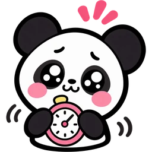

5分
ねえ、どっち派？
究極の
二択

- その場でみんなでQRを読みとるだけで、それぞれのスマホで参加
- 離れていても一緒にリンクを送れば、遠くの友だちも同じ部屋に
- 遊ぶたびに問題が変わる一度出た問題は、全部出しきるまで出てきません
 ×
×
166unmei.com（別のサイト）
あなたのこと、もっと知りたくない？
恋のかたち診断16の恋愛タイプ×愛着スタイルkoikata.jp・無料診断 ↗I-Syncアイシンク2人の答えを重ねて、シンクロ率がわかるi-sync.jp・無料診断 ↗ワンソナうちの子の性格を、44犬種のタイプで診断44wansona.com・無料診断 ↗16TYPE+生まれ持った気質と、育ってきた性格がわかる16typeplus.jp・無料診断 ↗
プライバシーポリシー
究極の二択 本音バレ診断
Produced by Mizuki Nico
みんなで遊ぶ
- 1部屋を作る
- 2LINEかQRで誘う
- 3スタートで一斉に開始
だれが参加する？
あなたも問題を作ってみる
送られた問題は、確認してから、みんなの問題に加わります。名前などは送られません。
こんな問題を待っています
- どっちにも良いところと痛いところがあって、本気で悩むもの
- 条件をつけるときは、両方に同じ条件をつける
- 実在の人の名前・悪口・下品な内容はのせません
- ほかのサイトや本の問題は写さない
送られた問題の確認
Netlify の環境変数 NITAKU_ADMIN_KEY に入れた文字です。
％の見かた
恋愛編・まぜまぜ編の結果に出る、4つの％です。
答えから出した遊びの診断です。性格を決めつけるものではありません。
この診断について
究極の二択は、どちらにも良いところと痛いところがある2つから、ひとつを選ぶ遊びです。選んだ答えから、心の向きを4つの％で見ています。
それぞれの％は、恋愛や性格についての心理学・社会学の考え方を参考にしています。質問の文と点のつけ方は、このサイトで作ったものです。
 恋愛編の4つの％
恋愛編の4つの％
恋愛を6つのスタイル（情熱の恋・遊びの恋・友愛の恋・実際的な恋・献身の恋・のめりこむ恋）に分けた研究を参考にしています。
- 小悪魔度：恋をゲームのように楽しむ度合い。追うより追わせる、余裕を見せる、駆け引きを楽しむ答えで高くなります。
恋愛を6つのスタイルに分けた研究のうち、「遊びの恋（ルダス）」の考え方を参考にしています。 - ロマンチスト度：恋に「ときめき・ドラマ」を求めるか、「現実・条件」を大事にするか。高い人は運命の出会い・サプライズ・記念日が好きで、ドラマのような恋にあこがれる「情熱の恋（エロス）」に、低い人は生活が合うか・安心できるか・条件を大事にする「実際的な恋（プラグマ）」に近くなります。
- 刺激好き度：恋のドキドキを求めるか、安心を求めるか。高いほど、恋の中でドキドキや新しさを求めます。低いほど、安心できるいつもどおりの関係を大事にします。
心理学者ズッカーマンの「刺激を求める度合い（センセーション・シーキング）」を、恋の場面に当てはめて参考にしています。 - 甘えたい度：甘えたいか、尽くしたいか。高いほど、恋人に頼りたい・甘えたい・安心させてほしい気持ちが強め。低いほど、見返りを求めずに相手に尽くす「献身の恋（アガペ）」に近くなります。
甘えたい側は、恋人に頼れるかどうかを見る心理学の「愛着」の研究、尽くしたい側は、恋愛の6つのスタイルの考え方を参考にしています。
まぜまぜ編の「日常のキャラ」の4つの物差し
まぜまぜ編の結果の％は、恋愛編と同じ4つの％で、恋の問題の答えから出します。日常の問題の答えは、下の4つの物差しで「日常のキャラ」を決めるのに使います。
- 冒険度：新しさや刺激を求める度合い。はじめてのこと、少しスリルのあること、先の読めないことを選ぶ答えで高くなります。
心理学者ズッカーマンの「刺激を求める度合い（センセーション・シーキング）」の考え方を参考にしています。 - こだわり度：いちばん良いものを選びたい度合い。全部くらべてから決める、100点が見つかるまで探す答えで高くなります。低い人は「これで十分」と満足できる人です。
心理学者シュワルツの「最高を求める人／ほどほどで満足する人」の考え方を参考にしています。最高を求める人は良い結果を出しやすい一方で、「もっといい道があったかも」と思いやすいことも知られています。 - 見栄っぱり度：人からよく見られたい度合い。人からよく見られたい・ほめられたい気持ちが強い答えで高くなります。低い人は、人目より本音やありのままを大事にする人です。
日本の心理学の研究で使われている「ほめられたい気持ち（賞賛獲得欲求）」「人からどう見えるかを気にする気持ち（公的自己意識）」の考え方を参考にしています。 - ノリ度：人と一緒にいて元気になる度合い。にぎやかな場や、人と関わる答えで高くなります。低い人は、ひとりの時間で元気をためる人です。
性格を5つの面で見る考え方（ビッグファイブ）の「外向性」を参考にしています。
本能モード
1問5秒で、考える前に選ぶモードです（20問）。はじめの1秒は問題を読む時間で、そのあと5秒たつと「時間切れ」で次の問題へ進みます。時間切れの問題は、結果に数えません。
本能モードでは％は出さず、選ぶまでの速さ（本能スピード）と、恋の問題で考える前に選んだ答えから決める「本能の恋のキャラ」・あなたの中にあることばを出します。1秒以内に選んだ答えは、より強く数えます。
答えるまでの時間
2つの答えの魅力が近いほど、人は選ぶのに時間がかかることが知られています。結果の「いちばん悩んだ問題」は、あなたの「迷いどころ」です。
 結果は、このスマホに残ります
結果は、このスマホに残ります
遊ぶたびに、結果がこのスマホの中に自動で残ります（最新10回まで）。トップの「前の診断の結果を見る」から、いつでも見られます。
恋のキャラ・日常のキャラは、これまでの答えを合わせて決めるので、どの問題でどちらを選んだかも、このスマホに残します（最近10回まで）。どれも、ほかの人には見えず、どこにも送りません。トップの「記録をリセットする」で、全部消せます。
ご注意
この診断は、心理学の考え方を参考にした遊びです。性格や相性を決めつけるものではありません。答えた内容は、みんなの回答％を数えるために「どちらを選んだか」だけを送ります。遊び終わったときは、遊んだ回数と、4つの％（みんなの中でのあなたの位置を出すため）を、名前なしで数えます。名前は送りません。友だちと遊ぶときは、名前と答えが同じ部屋の人にだけ見えます。
友だちの部屋に参加する
部屋を作った人のスマホに出ているQRコードを、カメラで読みとるだけでも参加できます。

部屋ができました
同じ名前の人が2人います。同じ人が、前に開いた画面からもう1回入っているのかもしれません。いない人は名前の横の × で外せます。
＋ もっと誘う
LINEで友だちを誘う送った相手は、リンクを押して名前を入れるだけで、この部屋に入れます。
となりの友だちに、QRコードを見せる
みんなにスマホのカメラでこのQRを読みとってもらうと、そのまま部屋に入れます。
QRを押すと、部屋のリンクをLINEなどで送れます
QRが読めないときは、トップの「招待された人はこちら」で番号 を入れてもらってね。
今すぐそろわないときは
友だちがすぐにリンクを開けないときは、先にあなただけで答えておけます。あとからリンクを開いた友だちは、同じ問題に答えて、みんなの結果に加わります（部屋を作ってから10日まで）。
一緒に答えると、おたがいの「悩み中…」「決めた！」がリアルタイムで見えます。そろいそうなときは、待つのがおすすめです。
自分たちで問題を作る（なくてもOK）
自分たちで問題を作れます
作らなくても、スタートできます
2つの答えを書いて足すと、ゲームの途中でその問題が出てきます。
- 作った人の名前つきで出ます（例：「りえさんが考えた問題」）
- この部屋のみんなにだけ出ます
- 1人3問まで
スマホを渡してね。ほかの人は見ちゃダメ！
ひとりで診断
答え合わせのお誘い
Produced by Mizuki Nico
Produced by Mizuki Nico